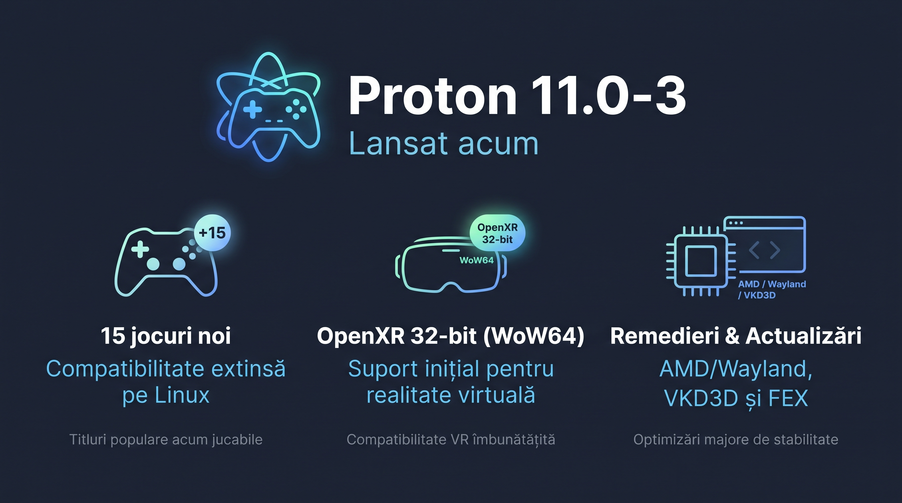

Proton 11.0-3 a fost lansat: Suport pentru 15 jocuri noi, suport inițial 32-bit OpenXR (via WoW64), remedieri pentru AMD/Wayland și actualizări VKD3D/FEX

Valve a lansat Proton 11.0-3, cea mai nouă actualizare stabilă a stratului său de compatibilitate bazat pe Wine pentru rularea jocurilor Windows pe Linux. Ediția extinde catalogul jocurilor compatibile cu 15 titluri noi, introduce suport experimental pentru aplicații VR OpenXR pe 32 de biți, remediază regresii importante pe GPU-uri AMD și KDE Wayland și actualizează componentele fundamentale de traducere grafică și emulare.
1. Jocuri noi suportate și îmbunătățiri pentru VR (OpenXR 32-bit)
15 jocuri noi jucabile: Printre titlurile adăugate se numără City Car Driving, Blair Witch VR, Bloody Zombies, Hero Plus, Korea. IL-2 Series și The Eden of Grisaia.
Suport inițial pentru aplicații OpenXR pe 32 de biți: Necesită activarea variabilei de mediu
PROTON_USE_WOW64=1pe sistemele x86. De asemenea, Valve a remediat un crash în VRChat și o eroare de pornire care afecta Blue Effect VR pe anumite procesoare.
2. Remedieri hardware (AMD, Steam Deck OLED, Steam Frame), Wayland și controllere
Compatibilitate hardware și platforme:
Restabilește funcționarea jocurilor Crysis și Crysis Wars pe anumite procesoare AMD mai noi;
Corectează funcționalitatea HDR în Far Cry 5 pentru posesorii de Steam Deck OLED;
Permite utilizatorilor Steam Frame să acceseze lansatorul Final Fantasy XIV.
Remedieri pentru regresii din Proton 11: Rezolvă o scurgere de memorie (memory leak) în Forza Horizon 4 sub KDE Wayland, elimină artefactele grafice din Command & Conquer: Generals și remediază problemele de compatibilitate care împiedicau rularea Deus Ex: Mankind Divided pe plăcile grafice AMD.
Controllere și Steam Input: Îmbunătățește gestionarea controllerelor în Far Cry New Dawn, The Binding of Isaac: Rebirth și Split/Second (prin Steam Input), precum și detecția gamepad-urilor în Dragon Age: Inquisition, Star Wars Outlaws și Avatar: Frontiers of Pandora.
3. Actualizări ale componentelor interne
Proton 11.0-3 actualizează mai multe componente esențiale ale stivei de compatibilitate:
VKD3D la versiunea 2.1;
Wine Mono la versiunea 11.3.0;
Xalia la versiunea 0.5.0.1;
FEX (emulatorul x86-on-ARM64) la versiunea 2610;
Actualizări suplimentare pentru DXVK, VKD3D-Proton și DXVK-NVAPI.